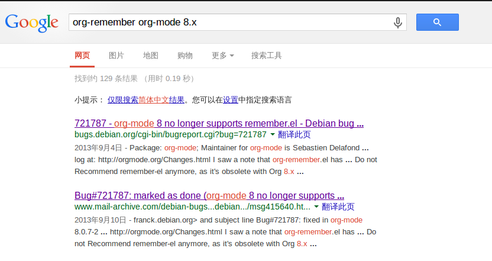

org-remember从org-mode中移除
因为Crow 的提议，我和他还有另外一个同学准备做一个开源项目，而在项目中需要使用python，因此这两天就在配置Emacs的python环境，同时把原来的Emacs配置文件整理了一下，这期间发生了不少问题。
首先是为了使用最新的Emacs，在系统里添加了PPA下载了Damien Cassou维护的Emacs版本 ，而python.el 在该版本Emacs下会出问题。重新从源里安装了Emacs 24后这个问题得到了解决。但因为我对配置文件的大幅度调整，导致Emacs一直提示
Can't load library: org
找不到该问题源头所在的我，尝试着删除了Emacs24自带的org，用上了8.2.1的版本，不想问题就这样解决了——唔，我还是知其然不知其所以然。
但后来又报错，说无法加载org-remember，我在org目录下一查找，发现居然没有了 org-remember.el 这个文件，一时间很困惑。
在Google上以 org-remember 和 org-mode8.x 为关键字，也只搜索到两条结果，不过这两条搜索结果告诉了我事实的真相。

原来org-mode 8已经不支持org-remember.el了。
org-remember.el的功能是建立在remember.el之上的，而remember.el并不是org-mode的一部分，估计org-mode的开发人员是为了不依赖remember.el，而将org-remember.el从新版的org-mode中移除了，并以org-capture.el来替换它。
因此，若要使用org-mode 8，相关的配置需要进行一定的更改
我在配置文件中为 org-remember 设置了快捷键，因此要将那条语句中的 org-remember 修改为 org-capture 。
其次，org-remember模板和org-capture的模板格式不一样，需要将原先org-remember的模板进行修改，对应的变量名 org-remember-templates 也要改为 org-capture-templaes 。
org-capture的模板格式可以到这里 进行详细地了解。